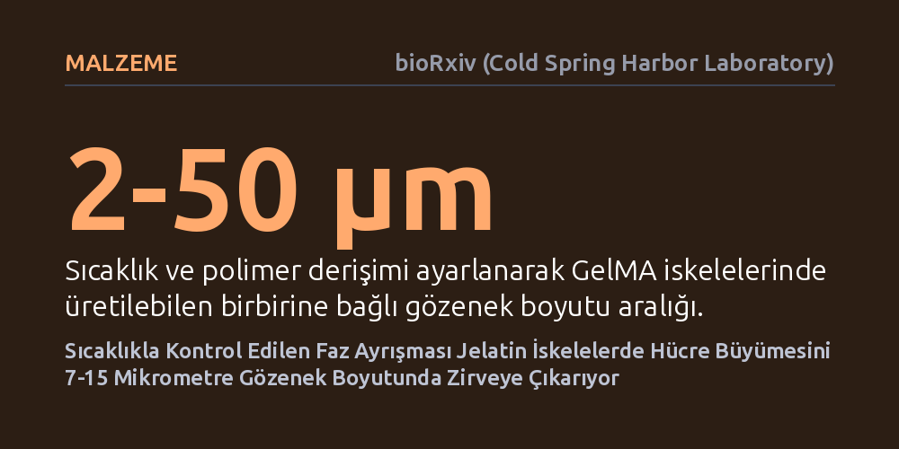

MALZEME · bioRxiv (Cold Spring Harbor Laboratory) · 2026-10-07
Araştırmacılar, doku mühendisliğinde hücre göçünü kısıtlayan dar gözenekleri aşmak amacıyla sıcaklıkla denetlenen faz ayrışmasıyla 2-50 mikrometre gözenekli GelMA iskeleleri üretti. Bu yapılarda fibroblast büyümesinin, hücrelerin matrisi yıkmasına gerek kalmadan 7-15 mikrometrelik gözeneklerde zirveye ulaştığı saptandı.
Doku mühendisliğinde hücrelerin yapay doku içine rahatça yayılabilmesi için karmaşık biyokimyasal işlemler yerine, sıcaklık ayarıyla gözenek boyutunun kolayca optimize edilebileceğini kanıtlıyor.

Doku mühendisliğinin temel hedefi, vücuttaki doğal dokuların karmaşık mimarisini laboratuvar ortamında aslına uygun biçimde yeniden üretmektir. Bu amaçla hücrelerin tutunup çoğalabileceği yapay taşıyıcı yapılar olan hidrojeller kullanılır. Ancak geleneksel hidrojellerin yapısındaki gözenekler genellikle nanometre boyutundadır. Bu son derece dar kanallar, doku gelişiminin en kritik unsurları olan oksijen ve besin maddelerinin taşınmasını zorlaştırır, hücrelerin iskele içine doğru serbestçe göç etmesini engeller ve yapay dokunun gelişimini sınırlar.
Nanometre ölçeğindeki bu bariyeri aşmak için hücrelerin hidrojel matrisini enzimlerle parçalayarak kendilerine yol açması gerekir. Fakat bu süreç hem hücreleri zorlar hem de dokunun istenen hızda ve düzende oluşmasını geciktirir. Araştırmacılar, hücrelerin matrisi yıkmak zorunda kalmadan içinde kolayca hareket edebileceği, birbiriyle bağlantılı ve mikrometre ölçeğinde gözeneklere sahip yeni nesil iskelelerin nasıl üretilebileceği sorusuna odaklanıyor.
Araştırma ekibi, doku iskelelerini üretmek için sıvı-sıvı faz ayrışması yönteminden yararlandı. Doğal jelatinden türetilen ve biyolojik uyumluluğu yüksek olan GelMA ile dekstran polimerini fizyolojik asitlik derecesinde (pH) bir araya getirerek bir faz diyagramı haritası çıkardılar. Bu harita sayesinde, karışımın kendiliğinden ayrılarak süngerimsi ve kemik dokusuna benzeyen sürekli bir ağ yapısı oluşturduğu spinodal ayrışma koşulları tam olarak belirlendi.
Elde edilen gözeneklerin boyutu, polimer yoğunlukları ve ortam sıcaklığı değiştirilerek hassas bir biçimde ayarlandı. Ekip, sıcaklık gradyanlarını ışıkla desenleme tekniğiyle birleştirerek gözenek morfolojisini mekânsal olarak kontrol etmeyi başardı. Bu sayede malzeme üzerinde tekdüze gözenekler yerine, canlı dokuların katmanlı mimarisine benzeyen ve farklı büyüklüklerde gözenekler barındıran hiyerarşik yapılar üretildi.
Geliştirilen iskelelerin biyolojik geçerliliğini test etmek amacıyla, kontrollü gözenek gradyanlarına sahip yapılara fibroblast hücreleri yerleştirildi. Deneyler, gözenek boyutunun hücrelerin iskele içine sızması, çoğalması ve mekânsal yerleşimi üzerinde belirleyici bir etkiye sahip olduğunu ortaya koydu. Geniş gözenekler, hücrelerin çevrelerindeki matrisi parçalamasına gerek kalmadan rahatça göç edebilmesi için yeterli serbest alan sağladı.
Yapılan ölçümlerde gözenek boyutunun 2 ila 50 mikrometre arasında değiştirilebildiği kanıtlanırken, fibroblast büyümesini en üst düzeye çıkaran kritik aralığın 7 ila 15 mikrometre olduğu belirlendi. Bu aralıktaki gözenekler, hücrelerin hem birbirleriyle temas halinde kalmasını hem de yeterli besin alarak hızla çoğalmasını sağlayan ideal bir mikro çevre sundu.
Elde edilen bulgular, yapay doku geliştirmede karşılaşılan hücre göçü ve kütle iletimi sorunlarına pratik ve kontrol edilebilir bir çözüm getiriyor. Sıcaklık gibi fiziksel bir parametreyi kullanarak gözenek boyutunu doğrudan ayarlayabilmek, her doku tipi için gereken özel mikro mimariyi laboratuvar ortamında kolayca oluşturma imkânı tanıyor.
Yazarlar, geliştirdikleri yaklaşımın üç boyutlu hücre kültürü çalışmaları için biyotaklitçi hidrojeller tasarlamada çok yönlü bir gözeneklilik tarama platformu sunduğunu ifade ediyor. Bu yöntem, gelecekte hasarlı dokuların onarılması, laboratuvarda organ modelleri üretilmesi ve ilaç denemelerinde daha güvenilir hücre ortamları oluşturulması açısından önemli bir potansiyel barındırıyor.